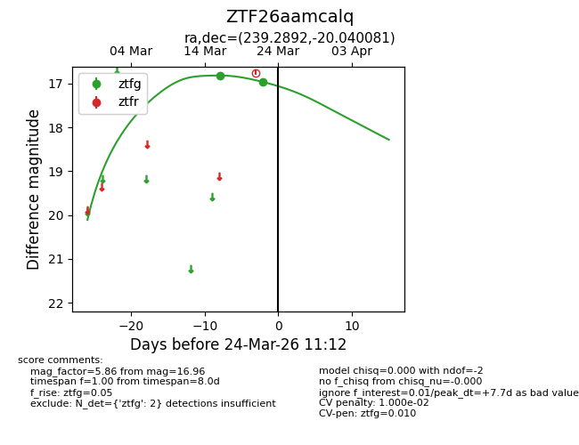
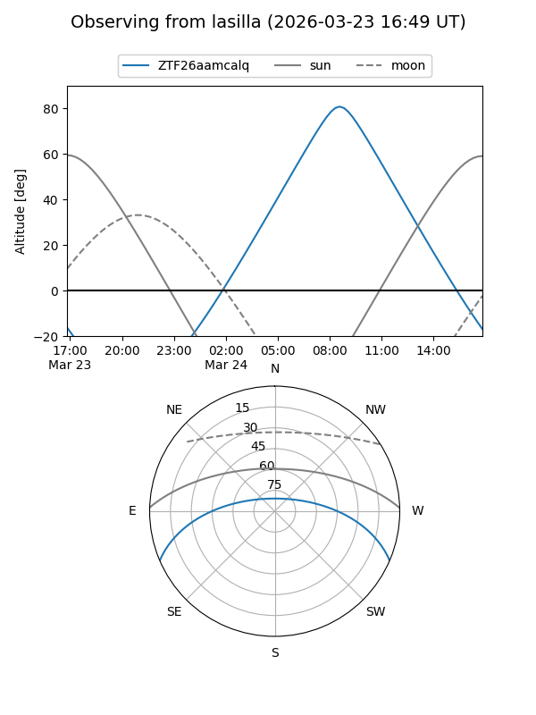
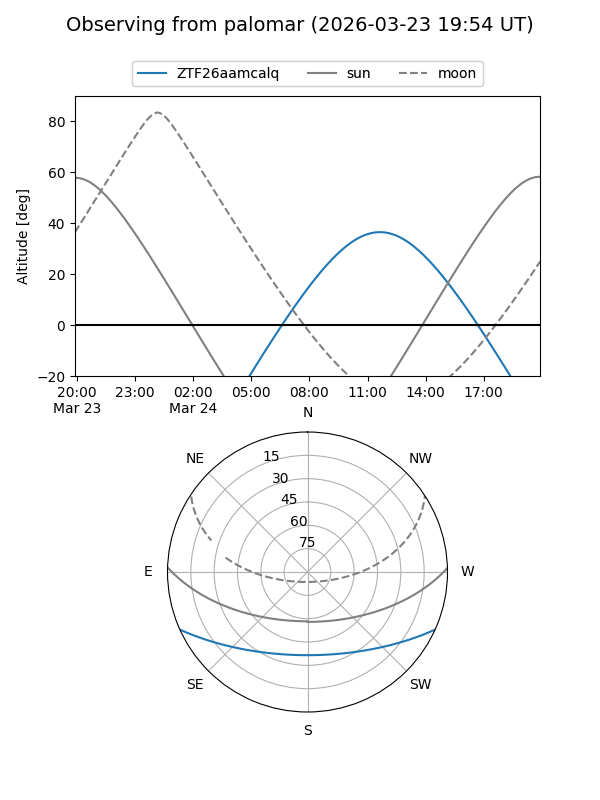
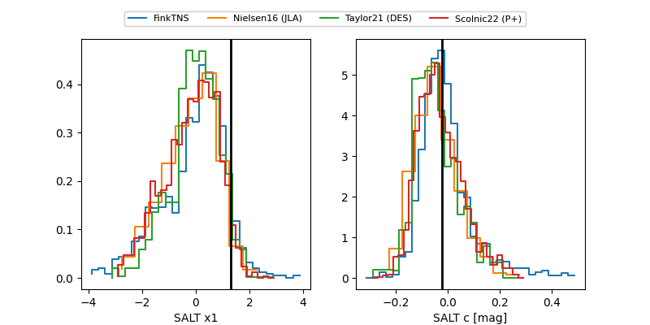

ZTF26aamcalq
Target ZTF26aamcalq at 2026-03-24 11:14
Aliases and brokers:
FINK: link
Lasair: link
ALeRCE: link
alt names
ZTF26aamcalq (ztf,fink_ztf)
Coordinates:
equatorial (ra, dec) = 239.2892,-20.04008
equatorial (HMS+DMS) = 15:57:09.41,-20:02:24.29
galactic (l, b) = (351.5248,+24.83603)
Flags:
likely cv
Photometry:
last ztfg=16.96
2 ztfg detections
Lightcurve

Visibility


Additional plots
